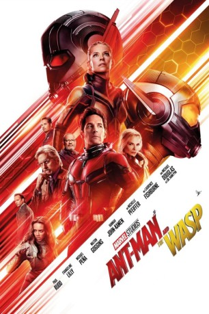

 
 IMDB-Wertung: 7.2 / 10
IMDB-Wertung: 7.2 / 10  Tomatometer: 88
Tomatometer: 88  Metascore:
Metascore: 
Scott Lang aka Ant-Man hadert mit den Konsequenzen seiner Taten als Superheld und Vater. Während er in Ant-Man and the Wasp versucht, sein Leben wieder in geregelte Bahnen zu lenken, steht ihm ein neuer Auftrag bevor. Auf Drängen von Hope van Dyne aka Wasp und Dr. Hank Pym schlüpft er erneut in die Rolle seines Superhelden-Alter Egos, um gemeinsam mit Wasp Licht in die Geheimnisse der Vergangenheit zu bringen.
Jahr: 2018
Dauer: 118 Minuten
FSK: 12
Land: USA Studio: Walt Disney Studios Motion PicturesTonspuren: DTS - ,
Untertitel: Deutsch,
Auflösung: 1080p (1920x1080) Größe: 5775 MB
Genre: Action, Sci-Fi, Komödie, Abenteuer
Regisseur: Peyton Reed
Drehbuch: Chris McKenna, Erik Sommers, Paul Rudd, Andrew Barrer, Gabriel Ferrari
Soundtrack: Christophe Beck
Darsteller:
Datei: X:\Comic-Filme\Ant-Man\Ant-Man and the Wasp (2018, FSK12, 1920x1080) 3D.mkv seit 15.11.2018
Festplatte: Comicverfilmungen+MusikCD
 Es gibt insgesamt 7 Filme in der Gruppe 'Comic-Filme\Ant-Man'
Es gibt insgesamt 7 Filme in der Gruppe 'Comic-Filme\Ant-Man'